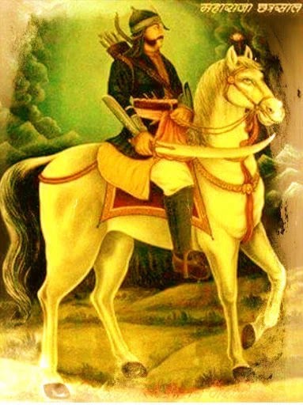
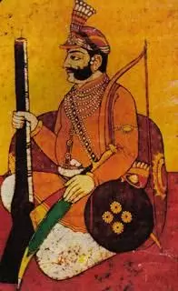
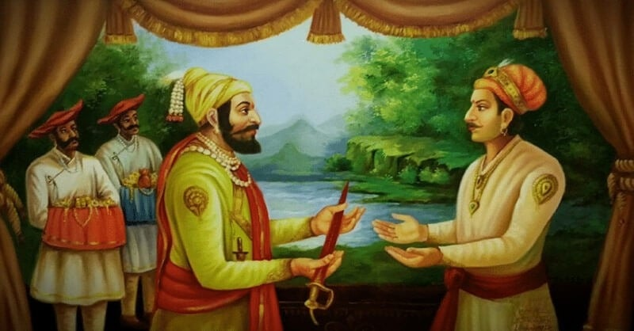
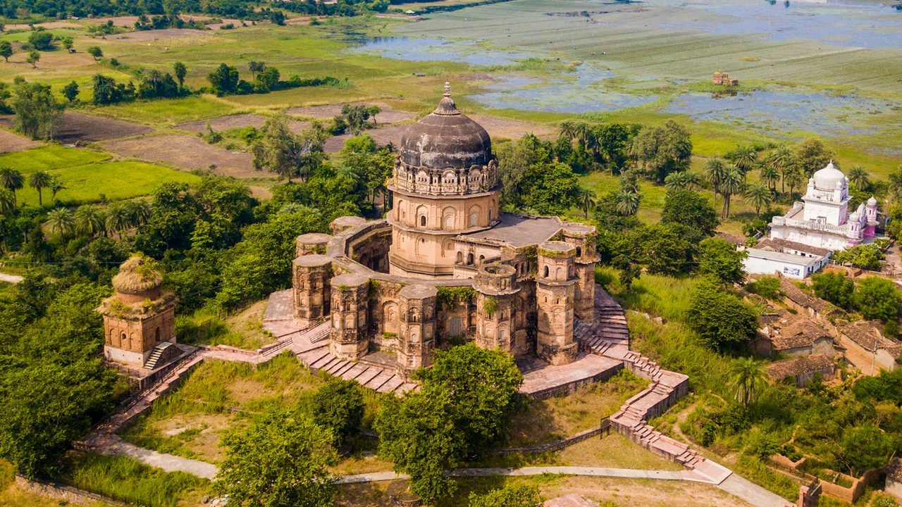
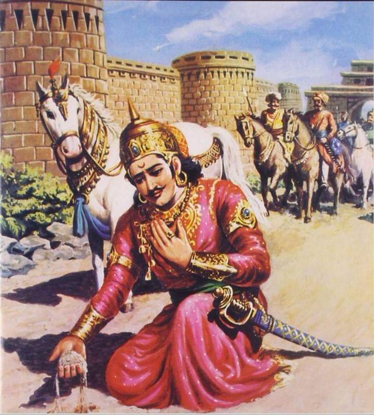
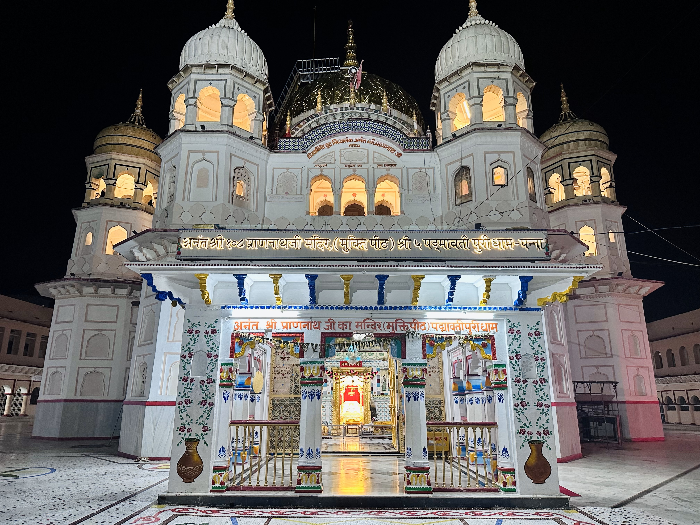
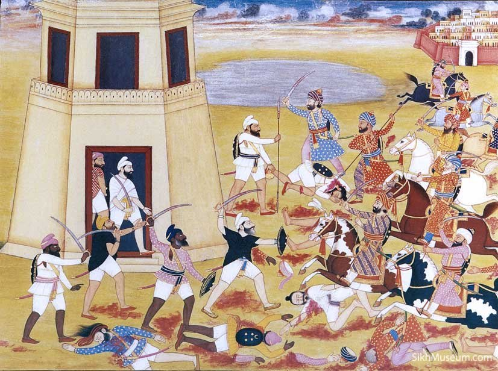
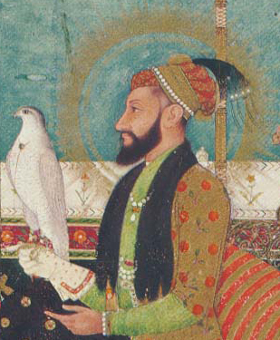
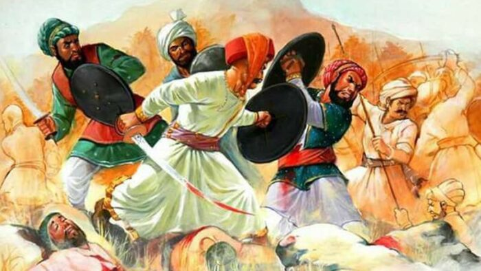

जन्म:-
जिस समय महाराजा छत्रसाल जी का जन्म हुआ, उस समय यहाँ मुगलों का शासन था।
औरंगज़ेब अपने भाइयों का क़त्ल करके और अपने पिता शाहजहां को कैद में डालकर दिल्ली के
तख़्त पर आसीन हुआ था। औरंगज़ेब बहुत ही क्रूर, लालची, सत्ता लोलुप एवं हत्यारा था। इसी
समय भारत में तीन शक्तियां अवतरित हुईं :-
दक्षिण में :- श्री छत्रपति शिवा जी
उत्तर पंजाब में :- श्री गुरु गोबिंद सिंह जी
मध्य भारत बुंदेलखंड में :- श्री छत्रसाल जी
महाराजा छत्रसाल जी के पिता चंपतराय जी को ओरछा के बंटवारे में नूना महिबा की जागीर
प्राप्त हुई। यहीं पर वह अपना राज्य कार्य संभाल रहे थे कि औरंगज़ेब का अत्याचार बढ़ता ही
जा रहा था और वह औरंगज़ेब का अत्याचार सहन न कर सके और उन्होंने औरंगज़ेब के खिलाफ बगावत
कर दी और इसीलिए उनकी नूना महिबा की जागीर मुगलों ने ज़ब्त कर ली और ऐसी स्थिति में
इन्हें अपनी पत्नी सारन्धा के साथ जंगलों में जाकर रहना पड़ा। और इसी समय छत्रसाल जी का
जन्म 6 मई 1649 ई. को ककर कचनाए ग्राम के पास स्थित
विंध्य वनों की पहाड़ियों में हुआ
था। वनभूमि की गोद में जन्में, वनदेवों की छाया में पले, वनराज के इस वीर का उद्गम ही
तोप, तलवार और रक्त प्रवाह के बीच हुआ।

श्री महाराजा छत्रसाल जी
बचपन :-
पांच वर्ष में
ही उन्हें युद्ध कौशल की
शिक्षा हेतु अपने मामा
साहेब सिंह धंधेरे के पास देलवारा भेज दिया गया था। छत्रसाल जी केवल 12 वर्षों के
ही थे, जब उन्होंने अपने निकटतम स्वजनों के विश्वासघात के कारण अपने माता-पिता को
खो दिया था , क्योंकि उन्होंने सारी युद्ध नीति शत्रुओं के आगे उजागर कर दी थी।
चंपतराय जी जब मुगलों से घिर गए, तब उन्होंने अपनी पत्नी के साथ अपनी ही कटार से
प्राण त्याग दिए, लेकिन मुगलों के हाथों का स्पर्श स्वीकार नहीं किया। छत्रसाल जी
का बचपन बहुत ही संघर्षपूर्ण था, उन्होंने इसी संघर्ष को अपने जीवन का शक्ति
स्त्रोत बनाया।
देवगढ़ विजय :-
छत्रसाल जी
अपने भाई के साथ अपने पिता
के मित्र जयसिंह के पास पहुंचकर उनकी सेना में भर्ती हो गए और वहां रहकर उन्होंने सैनिक
प्रशिक्षण लेना आरम्भ कर दिया। राजा जयसिंह तो दिल्ली सल्तनत के लिए ही कार्य करते थे,
अतः औरंगज़ेब ने उन्हें दक्षिण विजय का कार्य सौंपा था। छत्रसाल जी मुगलों की फ़ौज में
शामिल होकर वहां उनके मध्य रह कर उनका रण-कौशल और उनकी कमियां जानना चाहते थे और उनकी
जो प्रजा उनसे असंतुष्ट थी, उनको एकत्रित कर एक संगठन बनाना चाहते थे।

श्री महाराजा छत्रसाल जी
महाराजा छत्रसाल
जी को 1665 ई. में बीजापुर युद्ध में असाधारण शौर्य
दिखाने का पहला अवसर मिला और
उन्होंने देवगढ़ के राजा को पराजित किया। इस युद्ध में वह इतने घायल हो गए कि यदि उनका
घोड़ा ( जिसे बाद में भलेभाई के नाम से विभूषित किया गया ) उनकी रक्षा न करता तो छत्रसाल
जी शायद जीवित ही न बचते। इतने पर भी यदि विजयश्री का सेहरा उनके सिर पर न बाँध मुगल
भाई-भतीजेवाद में बंट गया तो छत्रसाल जी का स्वाभिमान आहत हुआ और उन्होंने मुगलों की
बदनीयती समझ दिल्ली सल्तनत की सेना छोड़ दी और वह महाराष्ट्र के वीर शिरोमणि छत्रपति
शिवा जी से मिलने के लिए उतावले हो उठे।
शिवा छत्ता मिलाप:-
देवगढ़ विजय उपरांत छत्रसाल जी ने वीर शिवा जी से मिलने की योजना बनायीं थी | लक्ष्य के
अनुसार कुमार छत्रसाल मुग़ल शिविर छोड़ कर दक्षिण की ओर
हिंदुत्व के सशक्त प्रहरी छत्रपति
शिवा जी की राजधानी की तरफ बढ़ चले | लक्ष्य आसान न था | एक तो मुग़ल सेना द्वारा पकड़े
जाने का भय, दूसरा मार्ग की अठखेलियां और मार्ग उल्टा होने का भय | क्योंकि उनके लिए यह
मार्ग अनजान था | संकल्प और आत्म बलशाली व्यक्ति को मार्ग के
व्यवधान कभी भी रोक नहीं
पाते | कुमार छत्रसाल का घोड़ा उबड़-खाबड़ धरती पर चलने का अभ्यस्त था, यहाँ भी
बुंदेलखंड
जैसा ही भौगोलिक परिवेश था | तीर्थ यात्री के भेष में निकले कुमार छत्रसाल चारों तरफ
खोजी आँखों से निहारते चले जा रहे थे | रास्ते में कई पड़ाव आये और गए | अनेक स्थलों पर
उन्होंने मुसीबत में फंसे लोगों की सेवा कर उनका मन जीत
लिया | छत्रसाल जी अपने घोड़े पर
सवार सरपट बढ़ते जा रहे थे यकायक भयंकर बाढ़ लिए भीमा नदी मिली | अभी वर्षा हुई थी उन्माद
भरी भीमा नदी कुमार छत्रसाल की परीक्षा लेने मुख खोले सामने चुनौती दे रही थी | छत्रसाल
जी ने जान की बाज़ी लगाकर भीमा नदी को परीक्षा दी और सफलतापूर्वक उसे पार किया |

श्री महाराजा छत्रसाल जी
अब मिलन की पावन बेला सन्निकट आ रही थी, शिवा जी को गुप्तचरों द्वारा छत्ता के निकल
भागने और महाराष्ट्र की तरफ पदार्पण आने की सूचना मिल चुकी थी | भीमा नदी पर शिवा जी
गुप्त रूप से उनका स्वागत भी कर चुके थे | छत्रसाल जी ने शिवा जी के पास सिंहगढ़ पहुंचकर
अपना सन्देश भेजा | सन्देश पाकर शिवा जी भाव विह्वल हो गए | छत्रपति शिवा जी और कुमार
छत्रसाल जी का महा मंगल मिलन इतिहास की अमूल्य धरोहर बन गयी | इन दोनों
शूरवीरों के
मिलन की पावन घड़ी में लिखा गया हिंदुत्व की अखंड संरक्षा और सुरक्षा का इतिहास | धर्म
के उत्थान हेतु यही तो पधारे हैं असुरों के दमन एवं सज्जनों की रक्षा के लिए | शिवा जी
ने छत्रसाल जी से हाल-चाल पूछे और वीर चंपा दम्पति को भावभीनी श्रद्धांजलि दी, तभी
छत्रसाल जी के भी नेत्रों से अश्रु आ गए | वीर शिवा जी ने छत्रसाल जी को सहानुभूति के
साथ सांत्वना दी और कुछ काल वहीँ रुकने का आग्रह किया | कुमार छत्रसाल जी की अभिलाषा
पूर्ण हुई और उन्होंने कुछ समय वहीँ रुकने का विचार बनाया ताकि छत्रपति शिवा जी के
सानिध्य का लाभ मिले सके | इस प्रकार छत्रसाल जी 1668-70 ई
तक शिवा जी के पास ही रहे |
यहाँ रहकर उन्होंने छापामार युद्धनीति सीखी | साथ-साथ उन्होंने राजनीती, रणकौशल और
कूटनीति भी सीखी | गुप्तचर कैसे काम करते हैं यह भी उन्होंने यहीं पर रहकर ही सीखा |
थोड़े ही समय में कुमार छत्रसाल जी ने यहाँ रहकर बहुत सी जानकारियां प्राप्त कर लीं | एक
दिन छत्रपति शिवा जी ने उन्हें अपने सिंहासन पर बैठाया और बोले कुमार छत्रसाल यह
सिंहासन अब तुम्हें बुंदेलखंड में भी मिलना है, तुम सिंहासन पुत्र हो, तुम्हें अपनी
मातृभूमि को गुलामी की दास्तां से स्वतंत्र करना है | ऐसा कहकर छत्रपति शिवा जी ने
कुमार छत्रसाल जी को अपनी भवानी तलवार भेंट में दे दी |
इसके बाद शिवा जी ने कुमार
छत्रसाल जी को भावभीनी विदाई दी |
बुन्देलखण्ड वापसी :-
शिवा जी से स्वराज का मंत्र लेकर कुमार छत्रसाल वापिस अपनी मातृभूमि लौट आये, परन्तु
तत्कालीन बुन्देलखण्ड भूमि की स्थितियां बिल्कुल भिन्न थीं | अधिकांश रियासतदार मुगलों
के मनसबदार बन चुके थे | छत्रसाल के भाई-बंधू भी दिल्ली से भिड़ने को तैयार नहीं थे |
स्वयं उनके भी हाथ कोई धन-सम्पति नहीं थी | दतिया नरेश
शुभकरण ने कुमार छत्रसाल का
सम्मान तो किया, पर औरंगज़ेब से बैर न करने की सलाह दी | ओरछा नरेश सुजान सिंह बुंदेला
ने छत्रसाल जी का अभिषेक तो किया पर संघर्ष से अलग रहे | तब छत्रसाल जी ने राजाओं के
बजाय जनोन्मुखी होकर अपना कार्य प्रारम्भ किया और इन्होने पांच घुड़सवार और पच्चीस
सैनिकों की सैनिक टुकड़ी तैयार की और छत्रसाली झंडा बनाया और मुगलों के खिलाफ बगावत शुरू
कर दी |

श्री महाराजा छत्रसाल जी
लाखों सैनिक हज़ारों घुड़सवार और हज़ारों रूपए तथा सेनापतियों से सजी मुग़ल सेना से मोर्चा
लेने का उद्यम रचने वाले के पास केवल पांच घुड़सवार और पच्चीस
सिपाही | नि:संदेह उस समय
जनमानस के अंतर्मन में भी इस अभियान के प्रति अविश्वास की धारणा बनी होगी, परन्तु
इतिहास साक्षी है कि बड़े से बड़े कार्य छोटे से छोटे संगठनों ने विशालकाय रूप धारण कर
असंभव को भी संभव कर दिखाया है और संसार को आश्चर्यचकित किया है |
प्रथम आक्रमण :-
छत्रसाल जी ने अपना प्रथम आक्रमण अपने माता-पिता के साथ विश्वासघात करने वाले सेहरा के
धंधेरों पर किया |
1671 ई में छत्रसाल जी ने कुंवर सेन
के साथ उसकी मदद को आये हासिम
खां को भी कैद में ले लिया और कुंवरसेन के किले की घेराबंदी कर उस पर विजय प्राप्त की |
मालवा का यह भाग आजीवन छत्रसाल जी के नियंत्रण में रहा | इसके बाद छत्रसाल जी ने काफी
धर्मद्रोही हिन्दुओं के साथ युद्ध किए |
धूमघाट विजय :-
इस अभियान अवधि के दौरान 1670 ई में अपने रण-कौशल को
दिखाने के लिए छत्रसाल जी उपयुक्त
समय की खोज में थे कि तभी औरंगज़ेब ने पिलाई खां को ओरछा के मंदिर ध्वस्त करने के लिए
भेजा | चम्पतराय और सारन्धा के अवसान के पश्चात् बुन्देल भूमि स्वाभिमानी वीरों से
विहीन हो चुकी है, ऐसा समझकर सेना आगरा से ओरछा की तरफ चल पड़ी, उस समय ओरछा के राजा
सुजान सिंह थे, ऐसी संकट की स्थिति में उन्होंने कुमार छत्रसाल जी को बुलाकर उनसे
सहायता मांगी और उनके माता-पिता की मौत के प्रसंग पर उनसे प्रायश्चित किया और उन्हें
अपनी पसंदीदा तलवार 'रण-कारकाशा' से आशीर्वाद दिया |

श्री महाराजा छत्रसाल जी
कुमार छत्रसाल ने धूरमंगद बख्शी को
साथ लेकर धूमघाट के मैदान में फिदाई खां को रोक लिया | भयंकर युद्ध हुआ | औरंगज़ेब की
सेना छत्रसाल और धूरमंगद की सेनाओं के बीच फंस गयी, जिससे कि फिदाई खां बची हुई सेना के
साथ ग्वालियर भाग गया | जीत की ख़ुशी जल्द ही धूमिल हो गयी जब कुछ ही दिनों में फिदाई
खां एक बड़ी सेना के साथ लौट आया | इधर छत्रसाल जी जवाब देने के लिए तैयार थे | उन्होंने
फिदाई खां की सेना को काफी नुकसान पहुँचाया और ओरछा में जीत की ख़ुशी वापिस ला दी |
सुजान सिंह ने बड़े सम्मान के साथ छत्रसाल जी को गले लगाया और बधाई दी |
मध्यप्रदेश की यह रणभूमि धूमघाट राजस्थान की हल्दीघाटी के समान है | वस्तुतः पश्चिम
दिशा से बुन्देलखण्ड में प्रवेश पाने हेतु सर्वाधिक उपयुक्त स्थान यही है | कुमार
छत्रसाल के लिए यह रणास्थली धूमघाट वरदान है | धूमघाट विजय से ही उनकी यशोगाथा बुन्देल
भूमि के चप्पे-चप्पे में फैली थी और वह 'नरवीर हिन्द केसरी चम्पक सुमन छत्रसाल' के नाम
से जन-जन के नायक बने थे |
श्री प्राणनाथ जी से मिलन :-
छत्रसाल जी पर ' महामति श्री प्राणनाथ जी की बहुत कृपा थी। जिस समय छत्रसाल जी मुगलों
की शक्ति को कमज़ोर करने का संघर्ष कर रहे थे, उसी समय श्री प्राणनाथ जी विश्व कल्याण की
भावना को बढ़ावा दे रहे थे। 1671 ई.में बुंदेलखंड की
स्वतंत्रता और हिंदुत्व की रक्षा
के लिए चिंतिंत छत्रसाल जी एक रात्रि निद्रा के वशीभूत हो गए। अचानक ही वह स्वप्न देखने
लगे, स्वप्न में ही 'श्री विजयाभिनन्द निष्कलंक बुध ' ने
उन्हें दर्शन दिया और बोले "
छत्ता , तुम चिंता न करो। मैं पल-पल तुम्हारे साथ हूँ। तुम अपने कार्य में लग जाओ, मैं
एक निश्चित समय पर तुमसे अवश्य मिलूँग। मैं तुम्हें अपनी पहचान की एक मुहर देता हूँ,
उसे हमेशा अपने पास रखना। " स्वप्न टूटने के साथ ही नींद भी समाप्त हो गयी। किन्तु उनकी
दृष्टि जब अपने हाथ की ओर गयी, तो उन्होंने देखा की सचमुच उनकी हथेली पर सोने की मुहर
रखी हुई थी। उन्होंने उस मुहर को आभूषण के रूप में अपने गले में धारण कर लिया और अपने
इष्ट के आगमन की बात देखने लगे। इसके 12 वर्षों के बाद 1682
ई. में महाराजा छत्रसाल जी
अपने भतीजे देवकरण के माध्यम से 'श्री प्राणनाथ जी' से प्रत्यक्ष रूप से मिले।

श्री महाराजा छत्रसाल जी
महाराजा छत्रसाल जी के भतीजे देवकरण श्री प्राणनाथ जी से
रामनगर में मिले। वहां दीवान
देवकरण जी श्री जी के चरणों में अटूट विश्वास लेकर आये। देवकरण जी के हृदय इस बात का
बहुत उत्साह था कि मैं श्री जी के प्रकट होने की बात महाराजा छत्रसाल जी से कहूंगा और
इस बात को सुनकर वह बहुत आनंदित होंगे। क्यूंकि वह बारह वर्षों से उनकी बाट देख रहे
हैं। इसलिए वह रामनगर से चलकर मऊ आये और महाराजा छत्रसाल जी से मिलकर विजयाभिनन्द बुध
निष्कलंक स्वरुप श्री प्राणनाथ जी के प्रकट होने की साड़ी बात बता दी। महाराजा छत्रसाल
जी के मन में यह प्रबल इच्छा हो गयी की मैं श्री जी के चरण कमलों का दर्शन प्राप्त
करूँ। इसलिए महाराजा छत्रसाल जी ने देवकरण को निर्देश दिया कि तुम श्री प्राणनाथ जी को
यहाँ लेकर आओ। तब देवकरण जी श्री जी को लेने अगरिया पहुंचे और सब सुन्दरसाथ के साथ चलकर
श्री जी पन्ना जी पहुंचे और किलकिला नदी के किनारे घने वृक्षों के नीचे अपना निवास
बनाया।
उस समय महाराजा छत्रसाल जी मऊ में थे। और उन्होंने श्री जी को यह सन्देश भेजा कि इस समय
उनका वहां आना संभव नहीं है क्यूंकि उस समय अफगान खान ने विशाल सेना के साथ उनकी
राजधानी मऊ पर हमला कर दिया था। ऐसी स्थिति में प्रजा को असहाय छोड़कर आना उनके कर्तव्य
के विपरीत था। इसलिए छत्रसाल जी ने श्री जी को सन्देश में कहा कि आप कृप्या
बच्चों,वृद्धों एवं महिला वर्ग को वहीँ पर छोड़कर केवल युवा वर्ग के साथ दर्शन देने का
कष्ट करें, तो मेरे सारे कार्य सिद्ध हो जायेंगे। और हमें आपकी कृपा से अखंड सुख की
प्राप्ति होगी।
मऊ में तिंदुनी दरवाजे के पास श्री जी ने अपना डेरा डाला।
महाराजा छत्रसाल जी ने भेष बदल
कर दूर से ही उनका दर्शन किया। पुनः दूसरी बार वह एक शिकारी का भेष धारण करके वहां
पहुंचे, जहाँ सब सुन्दरसाथ के बीच श्री जी विराजमान थे। छत्रसाल जी वह कुछ दूरी पर खड़े
हो गए और श्री जी को सम्बोधित करते हुए बोले," बाबा जू, राम राम
!" श्री जी ने
प्रत्युत्तर में कहा कि ' बाबा ! यहाँ आकर बैठो। '
छत्रसाल जी बिछौने पर से बहुत दूर एक किनारे बैठ गए। श्री
प्राणनाथ जी ने उनसे कहा -
बाबा ! और आगे आकर मेरे सामने यहाँ बैठो। छत्रसाल जी वहां से उठकर थोड़ा सा और आगे आकर
बैठ गए। फिर श्री जी ने कहा कि और आगे आकर बैठो। अब तो तुम मेरे
फंदे में आ गए हो, अब
भागकर कहाँ जाओगे। तब छत्रसाल जी ने कहा कि एकमात्र
विजयाभिनन्द बुध निष्कलंक स्वरुप को
छोड़कर इस ब्रह्माण्ड में ऐसा कोई नहीं है, जो मेरे ऊपर फंदा डाल सके। मैं बारह वर्षों
से एकमात्र उन्हीं के स्वरुप का सेवक हूँ। यह देखिये मैंने अपने गले में उनकी छाप का
सिक्का भी पहना हुआ है।
जब छत्रसाल जी ने यह बात कही तो श्री जी ने छत्रसाल जी को थोड़ा सा बिछौना हटाने के लिए
कहा। जैसे ही उन्होंने बिछौना हटाया, उसके नीचे उन्हें बहुत सी मुहरों का ढेर दिखाई
दिया। श्री जी ने उसमे से एक मुहर उठाकर छत्रसाल जी को देखने के लिए कहा। जब छत्रसाल जी
ने दोनों मुहरों में समानता देखी तो वह समझ गए कि ये ही साक्षात् विजयाभिनन्द बुध
निष्कलंक स्वरुप हैं।
जिस प्रकार श्री कृष्ण जी ने अर्जुन को 'गीता ज्ञान' और 'गांडीव' धनुष का आशीर्वाद दिया
था, उसी तरह श्री प्राणनाथ जी ने भी छत्रसाल जी को आशीर्वाद दिया :-
छत्ता तेरे राज में धक-धक धरती होये।
जित-जित घोड़ा पग धरे, तित-तित हीरा होये।
जित-जित घोड़ा मुख करे, तित-तित फ़तेह होये।
श्री प्राणनाथ जी के आशीर्वाद ने सैन्य गतिविधियों के लिए वित्तीय संसाधनों की
प्रारंभिक कमी का समाधान किया, जिसके बाद पूरा पन्ना क्षेत्र हीरे कि खदानों से फैलने
फूलने लगा।
अफगान खान के साथ युद्ध :-
अभी श्री जी का स्वागत कार्य चल ही रहा था कि अफगान खान ने युद्ध का बिगुल बजा दिया।
युद्ध का बिगुल बज जाने पर भला क्षत्रिय कैसे शांत रह सकते हैं। जब युद्ध के लिए सेना
तैयार हो गयी, तो महाराजा छत्रसाल जी ने श्री जी के चरणों में अपना शीश झुकाया और
बोले-" संभवतः यह मेरा आखिरी प्रणाम हो सकता है, क्यूंकि मेरे पास सेना बहुत काम है,
मात्र एक हज़ार, जबकि अफगान खान के पास आठ हज़ार सैनिक हैं, जिसमे पांच हज़ार पैदल और तीन
हज़ार घुड़सवार हैं। "
श्री प्राणनाथ जी ने कहा -" छत्रसाल तुम चिंता मत करो, विजयश्री
तुम्हारी ही होगी। मैं
पल पल तुम्हारे साथ हूँ। " यह कहकर श्री जी ने अपना रुमाल छत्रसाल जी के सर
पर रखकर
अपना हस्त भी रख दिया। श्री जी का वरदान पाकर महाराजा छत्रसाल जी ने अचानक ही अफगान खान
के शिविर पर धावा बोल दिया। उस समय अफगान खान नाच-गाने के आनंद में मस्त था। अचानक
भयंकर युद्ध छिड़ गया। महाराजा छत्रसाल जी की तलवार को अफगान खान ने झुककर बचा लिया। जब
अफगान खान तलवार का वार करने वाला था, तो उसके हाथ से तलवार वैसे ही छूट गयी जैसे पीछे
से किसी ने खींच ली हो। अगले ही क्षण छत्रसाल जी की तलवार उसके सीने पर थी और वह हाथ
जोड़कर प्राणों की भीख मांग रहा था। अफगान खान को बंदी बना लिया गया और हर्जाने के रूप
में काफी धन देकर वह मुक्त हुआ।

श्री महाराजा छत्रसाल जी - अफगान खान के साथ युद्ध
युद्ध में जाने से पहले छत्रसाल जी की सेना को भी विश्वास नहीं था के वह सफलता प्राप्त
कर पाएंगे, लेकिन युद्ध में हुए उस चमत्कार के पश्चात् उनका विश्वास भी श्री जी के
प्रति अटूट हो गया। चमत्कार मांगना तो संसार की प्रवृति ही है। जब छत्रसाल जी वजय
प्राप्त कर अपने महल में लौटे तो सभी लोग एक स्वर में कहने लगे कि बिना श्री प्राणनाथ
जी की कृपा के यह विजय संभव नहीं थी।
एक बार श्री जी और महाराजा छत्रसाल जी पन्ना नगर के बाहर एकांत में धर्म चर्चा कर रहे
थे कि अचानक ही अफगान खान ने दूसरी बार आक्रमण कर दिया, उस समय महाराजा छत्रसाल जी के
सुरक्षाकर्मियों की संख्या बहुत कम थी। अचानक हुए इस हमले से छत्रसाल जी घबरा गए।
उन्होंने श्री जी से प्रार्थना की -" धाम धनी ! यह अफगान खान
अपनी दुष्टता छोड़ नहीं रहा
है। इसका क्या हल है ?" श्री प्राणनाथ जी ने कहा -
आज विजय दशमी का पर्व है, आज के दिन
ही रावण मारा गया था। इस आततायी की हार भी निश्चित है। ""
तब श्री जी ने छत्रसाल जी की तलवार अपने हाथों में लेकर उस पर अपनी मेहर की नज़र कर दी
और उसे देते हुए कहा - " छत्ता ! जब तक यह तलवार तुम्हारे पास
रहेगी, तब तक कभी भी
तुम्हारी हार्स नहीं होगी। तुम युद्ध में निश्चिन्त होकर जाओ। " महाराजा
छत्रसाल जी उस
तलवार को लेकर युद्ध करने गए। उस दोधारी तलवार की चमक ऐसी थी कि हर मुग़ल सैनिक दुसरे
मुग़ल सैनिक को छत्रसाल के ही रूप में देखने लगा। परिणाम, सारी मुग़ल सेना आपस में ही लड़
मरी। शाम तक घायल अफगान खान के लिए भागने के सिवाय कोई चारा नहीं बचा था।
राज्याभिषेक :-
छत्रसाल जी के राष्ट्र प्रेम, वीरता के कारण उन्हें भारी जान समर्थन प्राप्त था।
उन्होंने एक विशाल सेना तैयार कर ली थी, जिसमे 72 प्रमुख सरदार थे। वसिया के युद्ध के
बाद मुगलों ने छत्रसाल जी को ' महाराजा ' की मान्यता प्रदान की थी। उसके बाअद उन्होंने
' कालिंजर का किला ' भी जीता। 1678 में उन्होंने पन्ना
में राजधानी स्थापित की। और उनकी
34वीं वर्षगाँठ पर श्री जी के निर्देशन में उनका राज्याभिषेक किया गया।
औरंगज़ेब से युद्ध :-
औरंगज़ेब ने बुंदेलखंड पर सर्वाधिक आक्रमण किये थे, लेकिन वह महाराजा छत्रसाल जी को
पराजित करने में कभी भी सफल नहीं हो पाया। औरंगज़ेब ने तीस हज़ार सैनिकों की टुकड़ी मुग़ल
सरदारों के साथ छत्रसाल जी का पीछा करने के लिए छोड़ीं थीं। परन्तु युद्धों में महाराजा
छत्रसाल जी ने अपने अपर पराक्रम, जान सहयोग एवं चक्रव्यूह युद्ध नीति के फलस्वरूप हमेशा
विजय पायी थी। बुंदेलखंड से मुगलों का शासन महाराजा छत्रसाल जी ने हमेशा के लिए समाप्त
कर दिया था।

श्री महाराजा छत्रसाल जी
मुग़ल सल्तनत ने बुंदेलखंड में जो सैकड़ों सेनापति भेजे
थे, उनमें कुछ प्रमुख सिपहसालार
इस प्रकार हैं :- फिदाई खां, सैयद बहादुर खां, खालिद खां, अन्दुल खां, फौजदार मुहम्मद
खां। महाराजा छत्रसाल जी ने स्वतंत्र बुंदेलखंड की स्थापना के लिए दो सौ बावन युद्ध
लड़े, जिसमें से 52 प्रमुख थे और उन्होंने उन सब पर विजय प्राप्त की।
फौजदारों ने मिलकर जीवन में कभी भी महाराजा छत्रसाल जी से युद्ध न करने की कसम खाकर
औरंगज़ेब को अवगत करा दिया, जिसे सुनकर उसकी छाती को सांप सूंघ गया था। 1704 ई. में
औरंगज़ेब अंतिम बार महाराजा छत्रसाल जी के साथ युद्ध करने के लिए नौ लाख की सेना लेकर
बुंदेलखंड की ओर बढ़ा, इस युद्ध में औरंगज़ेब को करारी मात खानी पड़ी।
इस युद्ध में उसकी सेना के 45 उमराव, 38 खान सरदार और 5 लाख
सिपाही मरे थे तथा 2 लाख
घुड़सवार और 7 हज़ार हाथी मारे गए थ। महाराजा छत्रसाल जी की दैवीय तलवार के
प्रचंड प्रहार
से उत्पन्न चमक की चकाचौंध से मुग़लों को यही लगता था कि छत्रसाल जी ही हर एक से युद्ध
कर रहे है। औरंज़ेब की समस्त सेना तहस-नहस हो गयी। इसके बाद महाराजा छत्रसाल जी ने सीधा
मोर्चा औरंगज़ेब पर लगाया। उन्होंने औरंगज़ेब को तुरंत हाथी से नीचे गिरा दिया और उसकी
छाती पर चढ़ बैठे। महाराजा छत्रसाल जी औरंगज़ेब का सर धड़ से अलग करने ही वाले थे कि
औरंगज़ेब के दोनों हाथ क्षमा याचना हेतु उठ गए और वह प्राणों की भीख मांगने लगा। औरंगज़ेब
ने महाराजा छत्रसाल जी को सम्राट मान कर तथा मैत्री भाव रखकर फिर कभी बुंदेलखड में
प्रवेश नहीं किया।
बुंदेलखंड में मराठों का आगमन
:-
महाराजा छत्रसाल जी को अपनी जीवन संध्या में कई आक्रमणों का सामना करना पड़ा। 1729 ई.
में सम्राट मुहम्मद शाह के शासन काल में सूबेदार बंगस ने छत्रसाल जी पर आक्रमण के दिया।
छत्रसाल जी को मुगलों से निपटने के लिए दतिया, सेहड़ा के राजाओं ने साथ नहीं दिया।
महाराजा छत्रसाल जी का पुत्र हृदयशाह भी उदासीन होकर अपनी जागीर में बैठा रहा। तब
महाराजा छत्रसाल जी की आयु 85 वर्ष तक पहुँच चुकी थी। तब
उन्होंने बाजीराव पेशवा को
सन्देश भेजा :-
जो गति ग्राह गजेंद्र की, सो गति भई है आज।
बाजी जात बुन्देल की, राखो बाजी लाज।।

बुंदेलखंड में मराठों का आगमन
महाराजा छत्रसाल जी का सन्देश पाकर बाजीराव पेशवा सेना सहित सहायता के लिए पहुंचे और
उन्होंने बंगस को 1729 ई. में पराजित कर छठी का ढूढ़ याद
दिला दिया। इसके बाद महाराजा
छत्रसाल जी ने विजय उत्सव मनाया। इस विजयोत्सव में छत्रसाल जी ने बाजीराव का अभिनन्दन
भी किया और बाजीराव को अपना तीसरा पुत्र स्वीकार कर अपने राज्य का तीसरा भाग बाजीराव
पेशवा को सौंप दिया।
अंतिम समय की अलौकिक लीला :-
निःसंदेह महाराजा छत्रसाल जी का व्यक्तित्व और उज्जवल कीर्ति युगप्रवर्तक एवं महानत्व
दिव्य पुरुष के रूप में समूचे संसार में व्याप्त है। महाराजा छत्रसाल जी ' श्री
प्राणनाथ जी ' के माध्यम से पूर्ण ब्रह्म
परमात्मा के दिव्य ज्ञान से सराबोर हो उठे।
महाराजा छत्रसाल जी की आत्मा परमधाम की है, जिसका नाम सकुन्डल
सखी है, जो वहां की
प्रधान आत्मायों में से एक है और' श्री कुलजम स्वरुप वाणी
' में परमावतार महाराजा
छत्रसाल जी को अपार शोभा प्राप्त हुई है।
महाराजा छत्रसाल जी ने अपने तन का त्याग नहीं किया। 1731
ई.में गोधुलि बेला में
महाराजा छत्रसाल जी मऊ में धुबेला ताल के किनारे बाग़ में स्थित एक चट्टान पर अपने कपड़े
( पीले रंग का अंगरक्खा, मुकुट ) तलवार आदि रखकर चले गए और अंतर्ध्यान हो गए। वह
निःसंदेह आज अदृश्य हैं, लेकिन उनकी गणना कालजायी पुरुषों में होती है, यथा- हनुमान जी,
अश्वत्थामा इत्यादि। ऐसे ही पुरुष प्रातः स्मरणीय किये जाते हैं। इसलिए महाराजा छत्रसाल
जी की प्रातः कालीन वंदना निम्न शब्दों में की गयी है :-
श्री प्राणनाथ प्रताप से ,भए कालजयी छत्रसाल।
मरे कहें तें मर गए, अमर सदा छत्रसाल।।
.png)